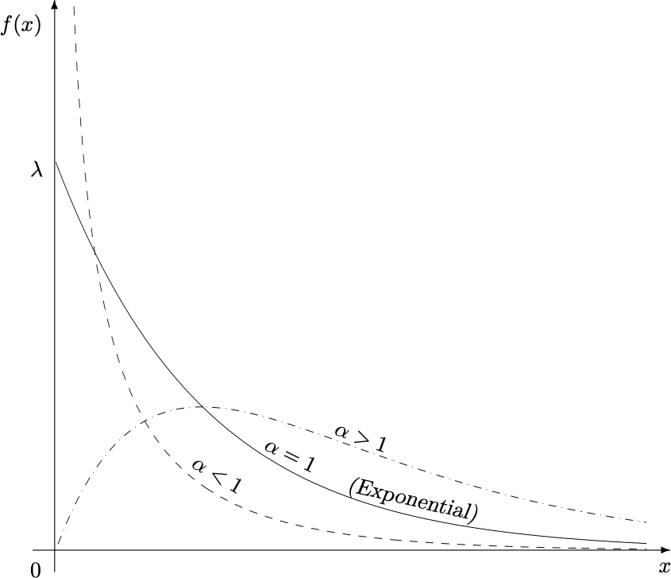
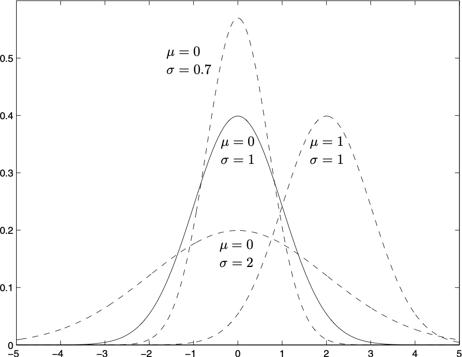

Xiaojing Ye
Department of Mathematics and Statistics
Georgia State University
A continuous RV \(X\) can take any value in an interval of \(\mathbb{R}\).
Therefore, the set of possible values of \(X\) is uncountable, and it is not meaningful to consider \(P(X=x)\) for any specific \(x\).
Instead, we only consider \(P(a < X <b)\) for some interval \((a,b)\).
We call \(p\) the probability density function (pdf) of \(X\) if \[ P(a < X < b) = \int_{a}^{b} p(x) \, dx\] for any interval \((a,b)\) in \(\mathbb{R}\). Note \(a,b\) can be \(\pm\infty\).
Due to the property of integral, we see \[ P(a<X< b) = P(a \le X < b) = P(a < X \le b) = P(a \le X \le b) \]
We define \(F\) as the cumulative distribution function (cdf) of \(X\) if \[ F(x) = P(X\le x) = \int_{-\infty}^{x} p(z) \, dz \] for any \(x \in \mathbb{R}\).
Example. Suppose a continuous RV has pdf \[ p(x) = \begin{cases} \frac{k}{x^3}, & x \geq 1 \\ 0, & x < 1 \end{cases} \] Find the value of \(k\), the cdf \(F\) of \(X\), and \(P(X > 5)\).
Solution. For unity, we need \[ 1 = \int_{-\infty}^{\infty} p(x)dx = \int_{1}^{\infty} \frac{k}{x^3} dx = \frac{k}{2} . \] Hence \(k = 2\). Clearly \(F(x) = P(X\le x) = 0\) if \(x < 1\). For \(x\ge 1\), there is \[ F(x) = \int_{-\infty}^{x} p(z)dz = \int_{1}^{x} \frac{2}{z^3} dz = 1 - \frac{1}{x^2}. \] Moreover, \(P(X >5) = 1-P(X \le 5) = 1-F(5)= 1 - (1- \frac{1}{5^2}) = 0.04\).
The expectation of a continuous RV \(X\) with pdf \(p\) is defined by \[ \mathbb{E}(X) = \int_{-\infty}^{\infty} x p(x) \,dx \]
Let \(X\) be a RV and \(Y=g(X)\) for some function \(g\). Then \[ \mathbb{E}(Y) = \mathbb{E}(g(X)) = \int_{-\infty}^{\infty} g(x) p(x) \,dx \]
The variance of \(X\) is defined by \[ \text{Var}(X) = \mathbb{E} \big( (X - \mu)^2 \big) = \int_{-\infty}^{\infty} (x-\mu)^2 p(x) \, dx\] Shorthand notations of variance: \(\sigma_X^2\) or \(\sigma^2\). We still can show \(\text{Var}(X) = \mathbb{E}(X^2) - \mu^2\).
The standard deviation of \(X\) is \[ \sigma_X = \sqrt{\text{Var}(X)} \] Sometimes also written as \(\text{std}(X)\).
Remark. \(\text{Var}(X)\) is always non-negative.
The covariance between \(X\) and \(Y\) is defined by \[ \text{Cov}(X,Y) = \mathbb{E}\bigl( (X-\mu_X)(Y-\mu_Y) \bigr) = \mathbb{E}(XY) - \mu_X \mu_Y \]
The correlation between \(X\) and \(Y\) is defined by \[ \text{Corr}(X,Y) = \frac{\text{Cov}(X,Y)}{\sigma_X \sigma_Y} \]
All properties about expectation, variance, covariance, and correlation still hold as for discrete RVs:
If \(X\) and \(Y\) are independent, then
Warning: Neither of these implies \(X\) and \(Y\) are independent in general!
Let \(a<b\) be real numbers. We say \(X \sim \text{Uniform}(a,b)\) if its pdf is \[ p(x) = \begin{cases} \frac{1}{b-a}, & \text{if~} a < x < b, \\ 0, & \text{elsewhere}. \end{cases} \]
We find \[ \begin{aligned} \mathbb{E}(X) & = \int_{a}^{b}x p(x) dx = \int_{a}^{b} \frac{x}{b-a} dx = \frac{a+b}{2} \\ \mathbb{E}(X^2) & = \int_{a}^{b}x^2 p(x) dx = \int_{a}^{b} \frac{x^2}{b-a} dx = \frac{a^2+ab+b^2}{3} \\ \text{Var}(X) & = \mathbb{E}(X^2) - (\mathbb{E}(X))^2 = \frac{(b-a)^2}{12} \end{aligned} \]
If \(X \sim \text{Uniform}(a,b)\) and \[ U = \frac{X-a}{b-a} \quad \text{or equivalently} \quad X = a + (b-a)U , \] then \(U \sim \text{Uniform}(0,1)\).
We call \(U\) the standard uniform RV. Notice that \[ \mathbb{E}(U) = \frac{1}{2}, \qquad \text{Var}(U) = \frac{1}{12}\]
We say \(X \sim \text{Exponential}(\lambda)\) if its pdf is \[ p(x) = \begin{cases} \lambda e^{-\lambda x}, & \text{if~} x>0, \\ 0, & \text{elsewhere}. \end{cases} \]
We can find its cdf is \[ F(x) = \begin{cases} 1- e^{-\lambda x}, & \text{if~} x>0, \\ 0, & \text{elsewhere}. \end{cases} \]
Remark. Exponential distribution is often used to model waiting time, failure time, etc.
Suppose \(X \sim \text{Exponential}(\lambda)\). Using integration by parts, we find \[ \begin{aligned} \mathbb{E}(X) & = \int_{-\infty}^{\infty} x p(x) dx = \int_{0}^{\infty} x \lambda e^{-\lambda x} dx = \frac{1}{\lambda}\\ \mathbb{E}(X^2) & = \int_{-\infty}^{\infty} x^2 p(x) dx = \int_{0}^{\infty} x^2 \lambda e^{-\lambda x} dx = \frac{2}{\lambda^2} \\ \text{Var}(X) & = \mathbb{E}(X^2) - (\mathbb{E}(X))^2 = \frac{1}{\lambda^2} \end{aligned} \]
Fix a unit time period, and suppose a certain event occurs independently for \(\lambda\) times on average during this period. Let \(Y\) be the number of events during this time period. We know \(Y \sim \text{Poisson}(\lambda)\).
Then the time between any two consecutive events follows \(\text{Exponential}(\lambda)\).
Proof sketch: Let \(X_1,X_2,\dots \stackrel{\text{iid}}{\sim} \text{Exponential}(\lambda)\) be the time gaps between two events, and \(Y \sim \text{Poisson}(\lambda)\) be the number of events. Then we just need to show for any \(n=0,1,\dots\) there is \[ P(Y=n) = P\biggl( \sum_{i=1}^{n+1} X_i > 1 ~\text{and}~ \sum_{i=1}^{n}X_i \le 1 \biggr) \] Note the joint pdf of \(X_1,\dots,X_n\) is \(\lambda^n e^{-\lambda \sum_{i=1}^{n} x_i}\) for all \(n \ge 1\) and \(x_i > 0\).
To show this equation, we calculate the right-hand-side: We just need to integrate the joint pdf of \((X_1,\dots,X_{n+1})\) over the domain \[ \Bigl(\sum_{i=1}^{n+1} x_i > 1 \Bigr) \bigcap \Bigl(\sum_{i=1}^{n} x_i \le 1 \Bigr) \subset \mathbb{R}^{n+1}_{+}, \] which yields \[ \int_{0 \le \sum_{i=1}^{n} x_i \le 1} \lambda^n e^{-\lambda \sum_{i=1}^{n} x_i} \Bigl(\int_{1 - \sum_{i=1}^{n} x_i}^{\infty} \lambda e^{-\lambda x_{n+1}} dx_{n+1} \Bigr) (dx_n \cdots dx_1)\] After integration, we find this is \(\frac{\lambda^n e^{-\lambda}}{n!}\), which is exactly the left-hand-side \(P(Y=n)\).
Example. A printer receives on average 3 jobs per hour. Find the expected time between two consecutive jobs and the probability that a new job will be received in 5 minutes.
Solution. Let \(X\) be the number of jobs received in 1 hour. Then \(X \sim \text{Poisson}(3)\). Let \(Y\) be the time between two consecutive jobs, then \(Y \sim \text{Exponential}(3)\). Therefore \[ \begin{aligned} \mathbb{E}(Y) = \frac{1}{3}. \end{aligned} \] Since 5 minutes is \(\frac{1}{12}\) hour, we get \[ \begin{aligned} P\Bigl(Y \le \frac{1}{12} \Bigr) = F_Y\Bigl(\frac{1}{12}\Bigr) = 1 - e^{-3\cdot \frac{1}{12}} = 1 - e^{-\frac{1}{4}} \end{aligned} \] where \(F_Y\) is the cdf of \(Y\).
We say \(X \sim \text{Gamma}(\alpha,\lambda)\) with shape \(\alpha>0\) and frequency \(\lambda>0\) if it has pdf \[ p(x) = \frac{\lambda^\alpha}{\Gamma(\alpha)} x^{\alpha-1}e^{- \lambda x} \quad \text{for all } x > 0\] where \(\Gamma\) is called the Gamma function and defined by \[ \Gamma(\alpha) = \int_0^{\infty} t^{\alpha-1} e^{-t} dt \] for any \(\alpha \ge 1\).
\[ \Gamma(\alpha) = \int_0^{\infty} t^{\alpha-1} e^{-t} dt \]
\(\Gamma\) ensures the unity of \(p\): \[ \int_{0}^{\infty} \lambda^{\alpha} x^{\alpha-1} e^{-\lambda x} dx = \int_{0}^{\infty} (\lambda x)^{\alpha-1} e^{-(\lambda x)} d(\lambda x) = \int_{0}^{\infty} t^{\alpha-1} e^{-t} dt = \Gamma(\alpha) \]
For any \(\alpha \ge 1\), there is \[ \Gamma(\alpha+1) = \int_{0}^{\infty} t^{\alpha} e^{-t}dt = -t^\alpha e^{-t} \Big\vert_{0}^{\infty} + \alpha \int_{0}^{\infty} t^{\alpha-1} e^{-t} dt = \alpha \Gamma(\alpha) \]
Easy to see \(\Gamma(1) = 1\). By the last property, there is \(\Gamma(n) = (n-1)!\) for all \(n>1\).
Suppose \(X \sim \text{Gamma}(\alpha,\lambda)\). We find \[ \mathbb{E}(X) = \int_{0}^{\infty} x p(x) dx = \int_{0}^{\infty} x \frac{\lambda^\alpha}{\Gamma(\alpha)} x^{\alpha-1}e^{- \lambda x} dx = \frac{\Gamma(\alpha+1)}{\lambda \Gamma(\alpha)} \int_{0}^{\infty} \frac{\lambda^{\alpha+1}}{\Gamma(\alpha + 1)} x^{(\alpha+1)-1}e^{- \lambda x} dx = \frac{\alpha}{\lambda} \]
We also find \[ \mathbb{E}(X^2) = \int_{0}^{\infty} x^2 p(x) dx = \int_{0}^{\infty} x \frac{\lambda^\alpha}{\Gamma(\alpha)} x^{\alpha-1}e^{- \lambda x} dx = \frac{\Gamma(\alpha+2)}{\lambda^2 \Gamma(\alpha)} \int_{0}^{\infty} \frac{\lambda^{\alpha+2}}{\Gamma(\alpha + 2)} x^{(\alpha+2)-1}e^{- \lambda x} dx = \frac{\alpha(\alpha+1)}{\lambda^2} \]
Therefore \[ \text{Var}(X) = \mathbb{E}(X^2) - (\mathbb{E}(X))^2 = \frac{\alpha(\alpha+1)}{\lambda^2}- \frac{\alpha^2}{\lambda^2} = \frac{\alpha}{\lambda^2} \]
pdf of Gamma\((\alpha, \lambda)\) with a fixed frequency \(\lambda\) and varying shape \(\alpha\)

Let \(X\) be a RV. The moment generating function (MGF) of \(X\) is defined by \[ G_X(t) = \mathbb{E}(e^{tX}) = \int_{-\infty}^{\infty} e^{tx}p(x) dx \] for any \(t > 0\). The name came from the fact that \[ \frac{d^k}{dt^k} G_X(t) \Big\vert_{t=0} = \mathbb{E}(X^k) \] for all \(k = 1,\dots,\), where \(\mathbb{E}(X^k)\) is called the \(k\)-th moment of \(X\).
Remarks. - Two RVs with the same MGF have identical \(p\). - If \(X\) and \(Y\) are independent, then \(G_{X+Y}(t) = G_X(t)G_Y(t)\).
Claim. If \(X_1,\dots, X_n \stackrel{\text{iid}}{\sim} \text{Exponential}(\lambda)\), then \[ \sum_{i=1}^{n} X_i \sim \text{Gamma}(n, \lambda) \]
Proof. Notice the MGF of \(X_i \sim \text{Exponential}(\lambda)\) is \[ G_{X_i}(t) = \mathbb{E}(e^{tX_i}) = \int_{0}^{\infty} e^{tx} \lambda e^{-\lambda x} dx = \frac{\lambda}{\lambda - t} \] Since \(X_1,\dots, X_n\) are independent, we get \[ G_{\sum_{i=1}^{n} X_i}(t) = \prod_{i=1}^{n} G_{X_i}(t) = \frac{\lambda^n}{(\lambda-t)^{n}} \] which is exactly the MGF of \(\text{Gamma}(n,\lambda)\).
For any \(n \in \mathbb{N}\), \(\lambda>0\), and \(t>0\), let \[ T \sim \text{Gamma}(n,\lambda), \qquad X \sim \text{Poisson}(\lambda t) \]
Suppose an event occurs at frequency \(\lambda\) and consider a time period of length \(\lambda t\). Then \[ \begin{aligned} (T>t) & = \text{It takes longer than $t$ to see $n$ events} \\ (X < n) & = \text{There are fewer than $n$ events occur during $\lambda t$} \end{aligned} \] These two cases are identical! Hence \((T>t) = (X<n)\) and \[P(T>t) = P(X<n) = F_X(n-1) \quad \text{and} \quad P(T \le t) = P(X\ge n) = F_X(n)\] where \(F_X\) is the cdf of \(X \sim \text{Poisson}(\lambda t)\).
Remark. This shows the relation between the cdf of Poisson and Gamma distributions, but be careful about the choices of \(n,\lambda,t\) when using it.
We say \(X \sim \mathcal{N}(\mu,\sigma^2)\) if it has pdf \[ p(x) = \frac{1}{\sqrt{2\pi \sigma^2}} e^{- \frac{(x-\mu)^2}{2\sigma^2}} \] for all \(x \in \mathbb{R}\).
Next we show \[ \mathbb{E}(X) = \mu, \qquad \text{Var}(X) = \sigma^2 \]
\[ \begin{aligned} \mathbb{E}(X) &= \int_{-\infty}^{\infty} x p(x) dx = \int_{-\infty}^{\infty} (x-\mu+\mu) \frac{1}{\sqrt{2\pi} \sigma} e^{-\frac{(x-\mu)^2}{2 \sigma^2}} dx\\ &= \int_{-\infty}^{\infty} (x-\mu) \frac{1}{\sqrt{2\pi} \sigma} e^{-\frac{(x-\mu)^2}{2 \sigma^2}} dx + \mu \int_{-\infty}^{\infty} \frac{1}{\sqrt{2\pi} \sigma} e^{-\frac{(x-\mu)^2}{2 \sigma^2}} dx\\ & = \sigma \int_{-\infty}^{\infty} \underbrace{z\frac{1}{\sqrt{2\pi}} e^{-\frac{z^2}{2}}}_{\text{odd function}} dz + \mu \int_{-\infty}^{\infty}\underbrace{ \frac{1}{\sqrt{2\pi} \sigma} e^{-\frac{(x-\mu)^2}{2 \sigma^2}} }_{\text{pdf of } \mathcal{N}(\mu,\sigma^2)} dx \\ & = 0 + \mu \cdot 1 \\ & = \mu \end{aligned} \] where the change of variable \(z = \frac{x -\mu}{\sigma}\) is applied in the 3rd line.
\[ \begin{aligned} \text{Var}(X) &= \int_{-\infty}^{\infty} (x-\mu)^2 p(x) dx = \int_{-\infty}^{\infty} (x-\mu)^2 \frac{1}{\sqrt{2\pi} \sigma} e^{-\frac{(x-\mu)^2}{2 \sigma^2}} dx\\ & = \int_{-\infty}^{\infty} \sigma^2 z^2 \frac{1}{\sqrt{2\pi}} e^{-\frac{z^2}{2}} dz = - \frac{\sigma^2}{\sqrt{2\pi}} \int_{-\infty}^{\infty} z \, d e^{-\frac{z^2}{2}}\\ &= - \frac{\sigma^2}{\sqrt{2\pi}}\Bigl( \underbrace{ \left. z e^{-\frac{z^2}{2}} \right|_{-\infty}^{\infty} }_{0} - \int_{-\infty}^{\infty} e^{-\frac{z^2}{2}} dz \Bigr) \\ &= \sigma^2 \int_{-\infty}^{\infty} \underbrace{\frac{1}{\sqrt{2\pi}} e^{-\frac{z^2}{2}}}_{\text{pdf of }\mathcal{N}(0,1)} dz \\ & = \sigma^2 \end{aligned} \]

Let \(X \sim \mathcal{N}(\mu, \sigma^2)\) and \(Z = \frac{X - \mu}{\sigma}\), then \(Z \sim \mathcal{N}(0,1)\).
\(Z\) is called the standard Gaussian RV. Its pdf is \[ p_Z(z) = \frac{1}{\sqrt{2\pi}} e^{-\frac{z^2}{2}} \] (We can show the unity of \(p_Z\) and hence of any \(\mathcal{N}(\mu,\sigma^2)\) pdf.)
The cdf of \(Z\) is by convention denoted as \[ \Phi(z) = P(Z \le z)= \int_{-\infty}^{z} \frac{1}{\sqrt{2\pi}} e^{-\frac{t^2}{2}} dt \] The value table of \(\Phi\) is easy to find.
Example. Suppose \(X \sim \mathcal{N}(900, 200^2)\). Find \(P(600 \le X \le 1200)\).
Solution. We apply a normalization \(Z = \frac{X-900}{200}\) to get \[ \begin{aligned} P(600 \le X \le 1200) & = P\Bigl( \frac{600-900}{200} \le \frac{X-900}{200} \le \frac{1200-900}{200}\Bigr) \\ & = P(-1.5 \le Z \le 1.5) \\ & = \Phi(1.5) - \Phi(-1.5) \\ & = \Phi(1.5) - (1 - \Phi(1.5)) \\ & = 2 \Phi(1.5) - 1 \\ & \approx 0.8664 \end{aligned} \]
Example. Suppose \(X \sim \mathcal{N}(900, 200^2)\). Find \(x\) such that \(P(X\le x) = 0.03\).
Solution. We apply a normalization \(Z = \frac{X-900}{200}\) to get \[ \begin{aligned} 0.03 & = P(X \le x) \\ & = P\Bigl( \frac{X-900}{200} \le \frac{x-900}{200}\Bigr) \\ & = P\Bigl( Z \le \frac{x-900}{200}\Bigr) \\ & = \Phi\Bigl(\frac{x-900}{200} \Bigr) \\ \end{aligned} \] We find that \(\frac{x-900}{200}=-1.88\) and hence \(x = 524\).
Let \(X_1,\dots,X_n\) be independent RVs (not necessarily the same distribution), all of which have expectation \(\mu\) and variance \(\sigma^2\). Let \(\overline{X} = \frac{1}{n}\sum_{i=1}^{n} X_i\). Then \[ \mathbb{E}(\overline{X}) = \mu, \qquad \text{Var}(\overline{X}) = \frac{\sigma^2}{n} . \] Moreover, for any \(z \in \mathbb{R}\), \[ P\Bigl( \frac{\overline{X} - \mu}{\sigma/\sqrt{n}} \le z \Bigr) \to \Phi(z) \quad \text{as} \quad n \to \infty\]
This effectively implies that \(\frac{\overline{X} - \mu}{\sigma/\sqrt{n}}\) approximately follows \(\mathcal{N}(0,1)\) when \(n\) is large (typically \(n\ge 30\)).
Example. Suppose \(X_1,\dots,X_{300}\) are independent RVs, while they all have expectation 1 and standard deviation 0.5. Find the probability their sum is smaller than 330.
Solution. Let \(\overline{X}\) be their average. Then \(300 \overline{X}\) is their sum. Then \[ \begin{aligned} P(300\overline{X} \le 330) & = P\Bigl( \overline{X} \le \frac{330}{300} = 1.1 \Bigr) \\ & = P\Bigl( \frac{\overline{X} - 1}{0.5/\sqrt{300}} \le \frac{1.1 - 1}{0.5/\sqrt{300}} = 2\sqrt{3}\Bigr) \\ & = P(Z \le 2\sqrt{3}) \\ & = \Phi(2\sqrt{3}) \end{aligned} \] where \(Z = \frac{\overline{X}-1}{0.5/\sqrt{300}} \sim \mathcal{N}(0,1)\) by CLT.
Let \(S \sim \text{Binomial}(n,\theta)\) with large \(n\). We can regard \[ S = X_1 + \dots + X_n, \quad \text{where} \quad X_1,\dots,X_n \stackrel{\text{iid}}{\sim} \text{Bernoulli}(\theta) \] Then the sample mean \(\overline{X} = \frac{S}{n}\) with \(\mathbb{E}(\overline{X}) = \theta\) and \(\text{Var}(\overline{X}) = \frac{\theta(1-\theta)}{n}\). As \(n\) is large, we have by CLT that \[ \frac{S - n \theta}{\sqrt{n\theta(1-\theta)} } = \frac{\overline{X} - \theta}{\sqrt{\theta(1-\theta)/n}} \sim \mathcal{N}(0,1) \] or equivalently \(S \sim \mathcal{N}(n \theta, n \theta(1-\theta))\).
This implies \(\text{Binomial}(n,\theta) \approx \mathcal{N}(n\theta, n\theta(1-\theta))\) when \(n\) is large.
| Distribution | \(x\) values | pdf \(p(x)\) | \(\mathbb{E}(X)\) | \(\text{Var}(X)\) |
|---|---|---|---|---|
| \(\text{Uniform}(a,b)\) | \((a,b)\) | \(\frac{1}{b-a}\) | \(\frac{a+b}{2}\) | \(\frac{(b-a)^2}{12}\) |
| \(\text{Exponential}(\lambda)\) | \((0,\infty)\) | \(\lambda e^{-\lambda x}\) | \(\frac{1}{\lambda}\) | \(\frac{1}{\lambda^2}\) |
| \(\text{Gamma}(\alpha,\lambda)\) | \((0,\infty)\) | \(\frac{\lambda^{\alpha}}{\Gamma(\alpha)}x^{\alpha-1} e^{-\lambda x}\) | \(\frac{\alpha}{\lambda}\) | \(\frac{\alpha}{\lambda^2}\) |
| \(\mathcal{N}(\mu,\sigma^2)\) | \((-\infty,\infty)\) | \(\frac{1}{\sqrt{2\pi} \sigma} e^{-\frac{(x-\mu)^2}{2 \sigma^2}}\) | \(\mu\) | \(\sigma^2\) |